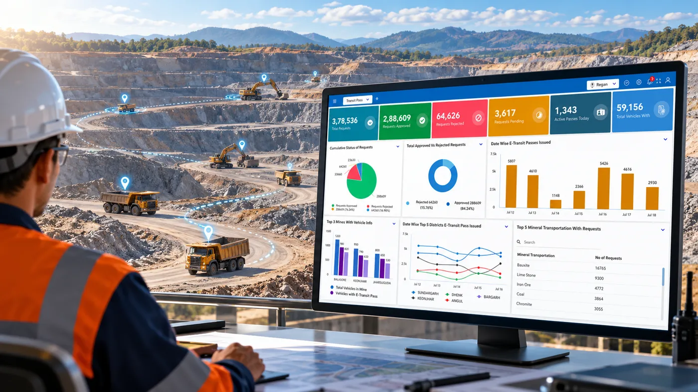

About the Client
A state government mineral administration ecosystem in India, responsible for regulating mineral movement, monitoring mining activities and managing associated permits, royalties and fees.
The initiative involved integrating mining lessees, end-use plants, transporters and government stakeholders through a unified digital platform to strengthen mineral governance and operational oversight.
The Challenge
Managing mineral production and transportation across a state requires coordination between mining operators, transporters, end-use plants and regulatory authorities.
The requirement was to establish a unified digital platform that would enable real-time mineral governance, control illegal diversions, reduce revenue leakage and integrate stakeholders across the state.
Key requirements included:
- Improved visibility into mineral production and transportation
- Monitoring of mineral-carrying vehicles and identification of unauthorized route deviations
- Digital authorization and tracking of mineral movement
- Integration of mining lessees, end-use plants and vehicles
- Centralized monitoring and reporting for improved governance and accountability
The Solution
CS TECH Ai delivered Khanij Online 2.0, an integrated digital mineral governance platform connecting mining lessees, end-use plants and vehicles through real-time monitoring and digitally managed workflows.
The solution brought together vehicle tracking, electronic permits, transit-pass management and geospatial monitoring within a centralized environment.
Key elements included:
- Unified Digital Platform: Integration of mining lessees, end-use plants and vehicles for centralized mineral governance.
- Vehicle Tracking System (VTS): AIS-140 GPS-enabled vehicle tracking with geofencing and live route monitoring to identify deviations from approved routes.
- e-Permit and e-Transit Pass Management: Digital authorization and tracking of mineral movement through electronic permits and transit passes.
- Integrated Command & Control Centre: Centralized geospatial monitoring and real-time MIS dashboards for operational visibility and oversight.
The Impact
Khanij Online 2.0 established a digital framework for state-scale mineral governance, enabling centralized visibility into mineral movement, transportation activity and associated regulatory processes.
Key implementation highlights include:
The platform supports transparent mineral movement, improved regulatory oversight and stronger accountability through integrated digital workflows, live tracking and centralized monitoring.